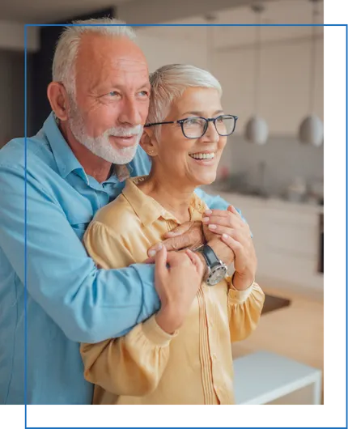
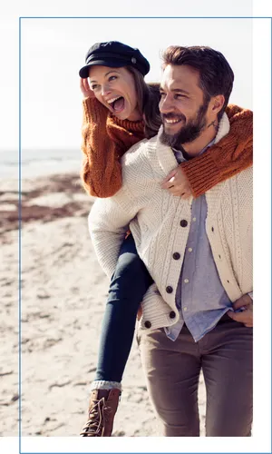

marital Support
Conflict in marriage is inevitable, thus, effective strategies for conflict resolution is inextricably tied to the success of a relationship. Brain Profiling helps married couples better understand the hard wiring of each individual, identify where that may be causing harm in the relationship, and provide tools to move forward with greater harmony and understanding.
Book A Free Discovery Call
Rebuild love and trust
Discovery | Support | Success
Discovery
Brain Profiling reveals how you and your partner react under stress. And while this may come as no surprise to you both, it will give you a framework and language to begin opening the lines of communication and understanding.
Support
Noeline provides you with coping and communication strategies based upon your unique Profile pairing. This targeted support pinpoints exactly where you're getting stuck and how to move through the hurt towards mutual love and respect.
Success
A strong marriage is built by two strong individuals. The wisdom you'll receive from understanding your individual profiles gives you the pathway to self-healing and self-responsibility so that you can rebuild the foundations of an unbreakable partnership together.
Ready to rebuild
mutual love and
respect in your
marriage?
Book A Free Discovery Call
